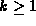
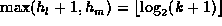

Data Structures and Algorithms
with Object-Oriented Design Patterns in Java
Data Structures and Algorithms
with Object-Oriented Design Patterns in Java
While using collapsing find does mitigate the negative effects of poor trees,
a better approach is to avoid creating bad trees in the first place.
As shown in Figure  ,
when we join to trees we have a choice--which node should we choose to be the root of the new tree.
A simple, but effective choice is to attach the smaller tree
under the root of the larger one.
In this case, the smaller tree is the one which has fewer nodes.
This is the so-called union-by-size join algorithm.
Program shows how this can be done.
,
when we join to trees we have a choice--which node should we choose to be the root of the new tree.
A simple, but effective choice is to attach the smaller tree
under the root of the larger one.
In this case, the smaller tree is the one which has fewer nodes.
This is the so-called union-by-size join algorithm.
Program shows how this can be done.
Program: PartitionAsForest class union-by-size join method.
The implementation uses the count field of the Container class, from which PartitionTree is derived, to keep track of the number of items contained in the tree. (Since each node contains one item from the universal set, the number of items contained in a tree is equal to the number of nodes in that tree). The algorithm simply selects the tree with the largest number of nodes to become the root of the result and attaches the root of the smaller tree under that of the larger one. Clearly, the running time of the union-by-size version of join is O(1).
The following theorem shows that when using the union-by-size join operation, the heights of the resulting trees grow logarithmically.
Theorem Consider an initial partition P of the universecomprised of N sets of size 1. Let S be an element of the partition obtained from P after some sequence of union-by-size join operations, such that |S|=n for some
. Let T be the tree representing the set S. The height of tree T satisfies the inequality
extbfProof (By induction).
Base Case Since a tree comprised of a single node has height zero, the theorem clearly holds for n=1.
Inductive Hypothesis
Suppose the theorem holds for trees containing n nodes
for for some .
Consider a union-by-size join operation that produces a tree
containing k+1 nodes.
Such a tree is obtained by joining a tree having  nodes
with another tree that has nodes,
such that l+m=k+1.
nodes
with another tree that has nodes,
such that l+m=k+1.
Without loss of generality, suppose . As a result, l is less than or equal to m. Therefore, the union-by-size algorithm will attach under the root of . Let and be the heights of and respectively. The height of the resulting tree is .
According to the inductive hypothesis, the height of is given by
Similarly, the quantity is bounded by
Therefore, the height of the tree containing k+1 nodes
is no greater than .
By induction on k, the theorem holds for all values of  .
.
Note that Theorem and its proof does not require that
we use the collapsing find algorithm of Section .
That is, the height of a tree containing n nodes
is guaranteed to be  when the simple find is used.
Of course, there is nothing precluding the use of the collapsing find
in conjunction with the union-by-size join method.
And doing so only makes things better.
when the simple find is used.
Of course, there is nothing precluding the use of the collapsing find
in conjunction with the union-by-size join method.
And doing so only makes things better.
 Copyright © 1998 by Bruno R. Preiss, P.Eng. All rights reserved.
Copyright © 1998 by Bruno R. Preiss, P.Eng. All rights reserved.